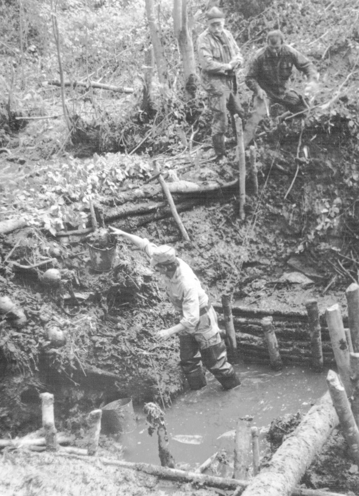

|
12-14 апреля 2013г. в г. Калуга прошёл Всероссийский слет поисковиков.
Место сбора было выбрано не случайно, именно здесь 25 лет назад (13 марта 1988г.), проходил 1-ый Всесоюзный сбор поисковых отрядов, на котором впервые на государственном уровне прозвучала проблема увековечения памяти сотен тысяч защитников Отечества, чьи незахороненные останки остались лежать на местах боев. Тогда же был создан Всесоюзный координационный совет поисковых отрядов. Но в связи с распадом СССР, поисковое движение претерпело изменения. В последующий период, в работе отрядов существовали некоторые разногласия и разобщенность. Отсутствие на общероссийском уровне органа, координирующего работу поисковиков, затрудняло взаимодействие, как внутри движения, так и с органами государственной власти.
Однако 13 апреля 2013г. 251 представители 71 субъекта Российской Федерации провели учредительный съезд Общероссийского общественного движения по увековечению памяти погибших при защите Отечества "Поисковое движение России". Участники съезда избрали координационный совет, состоящий из наиболее авторитетных и опытных поисковиков (по одному от федерального округа), которые будут представлять интересы объединений на государственном уровне.
Для эффективного сотрудничества с органами власти была организована работа шести дискуссионных площадок, на которых рассматривались разные аспекты поисковой деятельности. Был представлен опыт, обсуждены проблемы поискового движения, предложены пути их решения на федеральном уровне. В работе площадок приняли участие представители министерств и ведомств, к которым имелись вопросы и предложения: Министерства образования и науки РФ, Министерства обороны, центральных архивов, Федерального агентства по делам молодежи "Росмолодежь", общественно-государственных организаций "ДОСААФ России" и "Росвоенцентр".
Участниками слёта от нашей области были те, кто стоял у истоков организованного поискового движения в регионе: БАЛАШОВ С.Н., ТИТКОВ С.В., ХАЛИМАНЧУК А.В.

В марте 2013 г. поисковому движению Тверской области исполнилось 25 лет. За четверть века бойцами поисковых отрядов на территории области были эксгумированы и перезахоронены останки более 47 тысяч погибших защитников Отечества, установлены имена почти 4600 воинов. Ежегодные «Вахты памяти», сотни благодарных родственников погибших фронтовиков, исчезновение «белых пятен» войны – таков главный итог деятельности тверского поискового движения.
19 апреля в 12 час. на воинском мемориале в пос. Мигалово состоится торжественное открытие «Вахты памяти - 2013». Целью этого мероприятия является повышение роли и авторитета поискового движения в патриотическом воспитании граждан, обмена опытом работы по увековечению памяти погибших защитников Отечества.
|
{kind=link}
{kind=link}
{kind=link}
{kind=link}